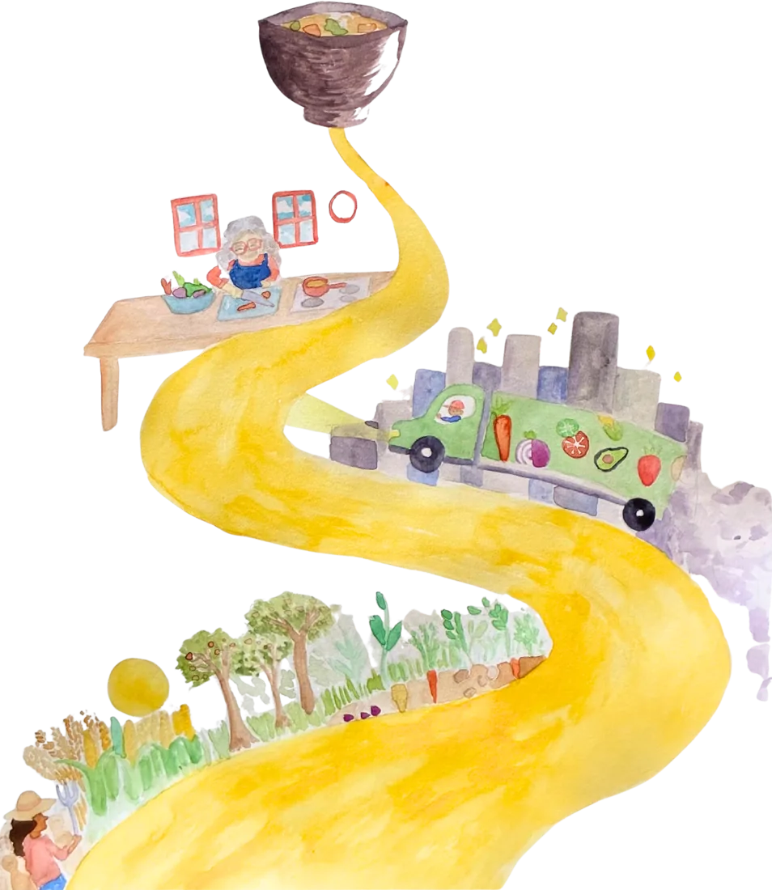
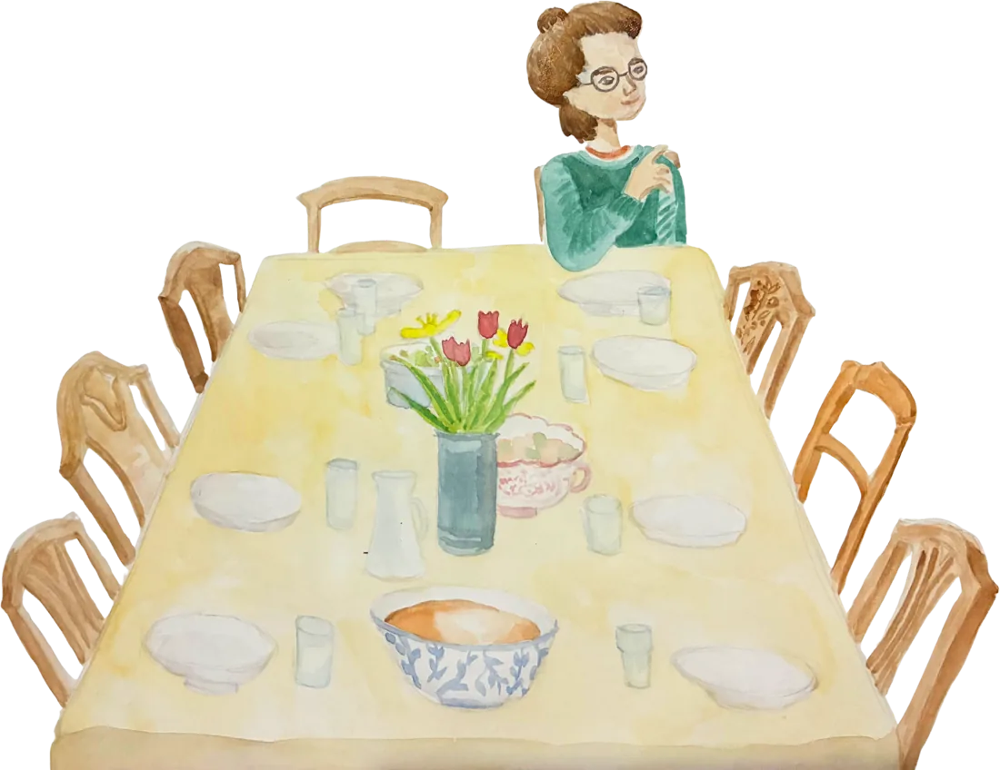
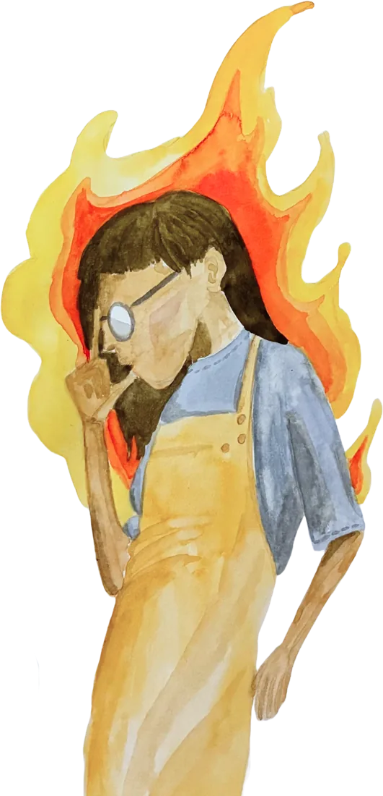
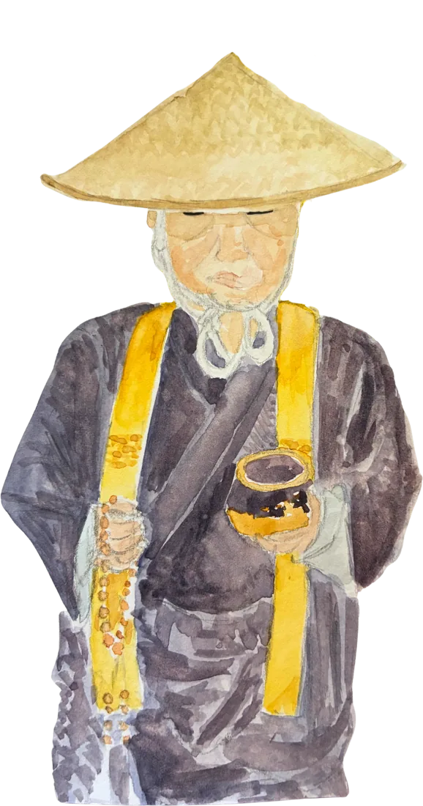
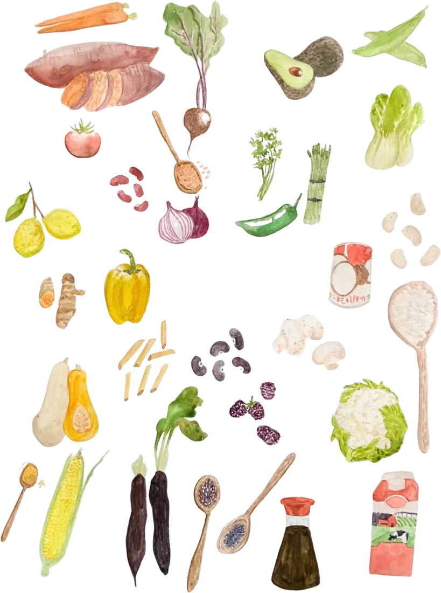

Home page mockups · direction E, watercolour
Three layouts, one stylesheet, the same placeholder copy. The paintings are from the Awami book as stand-ins; the washes, the cover and the spiral mark are generated in code on this page. Compare the layouts, not the words: copy is a separate job. Everything shown works at phone width.
1 · The chapter page
The Awami chapter opener, transferred whole: yellow block, tight title with an italic second line, a narrow column, one painting bleeding off the right edge. The three streams are chapter entries down the page. Whitepaper and manifesto get the severe treatment: type and a yellow rule, no painting.
Communities
where people
grow.
the home of developmental spaces
Some communities exist so that the people in them can grow: co-living houses, retreat centres, schools, new kinds of monastery. We call them developmental spaces. This is the place to learn about them, build one, or help fund one.

Three ways in

Learn
living together, on purpose
Is a conscious community for you? Three free courses, honest guides on what it is really like, and where to begin.

Build
spaces that grow people
For founders and designers: the whitepaper, the manifesto, the network of organisations, and the craft of designing places where people grow.

Fund
land, stewardship, capital
The thinking behind a real-estate fund for conscious community, published in full, and the projects raising money now.
The crises of our time are, at root, crises of inner development.
Modern civilisation is breaking down in ways that cannot simply be repaired. The trouble stems from the deep assumptions, values and perspectives that shape our culture, and modernity has treated the inner world as irrelevant. We lack trusted institutions dedicated to inner growth for the common good, even as half a century of research shows how far people can develop given the right conditions.
- iCognitive development · greater complexity of thought and understanding
- iiAwakening · spiritual growth in the domain of consciousness
- iiiHealing · metabolising trauma; integrating unconscious shadows
- ivEvolving worldview · circles of care widen toward a world-centric view
- vEngaged action · inner shifts become ethical engagement with the world
The whitepaper
Developmental Spaces: cultural incubators for a time of transformation
Rosie Bell, Boaz Feldman and Rufus Pollock · September 2025
The case for dedicated, growth-oriented spaces where communities engage in sustained, multi-domain inner development: what they are, why now, what characterises them, and how to build the field.
Developmental spaces where people grow.
2 · The road
The painting is the argument. A tall painting runs down the right of the page while the headline and the three doors sit beside it. "Why now" is a full yellow section, the book's block at page scale. The spiral mark appears inside a watercolour circle. Whitepaper severe, cover on the right.
Communities where people grow.
the home of developmental spaces
Some communities exist so that the people in them can grow: co-living houses, retreat centres, schools, new kinds of monastery. We call them developmental spaces. This is the place to learn about them, build one, or help fund one.
Why now
The crises of our time are, at root, crises of inner development.
Modern civilisation is breaking down in ways that cannot simply be repaired. The trouble stems from the deep assumptions, values and perspectives that shape our culture, and modernity has treated the inner world as irrelevant. We lack trusted institutions dedicated to inner growth for the common good.


What we mean by a developmental space
A place dedicated to growth, where a community practises inner development across several domains at once: how we think, how awake we are, what we have healed, how wide our care extends, and what we do about it. Not a retreat you visit for a week. A life you live with others, for years.
- iCognitive development · complexity of thought
- iiAwakening · consciousness
- iiiHealing · trauma and shadow
- ivEvolving worldview · widening circles of care
- vEngaged action · ethical engagement with the world
The whitepaper
Developmental Spaces: cultural incubators for a time of transformation
Rosie Bell, Boaz Feldman and Rufus Pollock · September 2025
Developmental spaces where people grow.
3 · The catalogue
Quieter and more editorial. The hero is the cover composition itself: a generated wash and the yellow square, no figure. Then a catalogue of small paintings with one italic label each, the book's vegetables page as a pattern, to say what a developmental space is made of. Streams as three columns under yellow rules. The spine is pure type between two black rules.
Communities where people grow.
the home of developmental spaces
Some communities exist so that the people in them can grow: co-living houses, retreat centres, schools, new kinds of monastery. We call them developmental spaces. This is the place to learn about them, build one, or help fund one.
What a developmental space is made of
A housea place held in common
A rhythmsitting, working, restingRoles that rotatecollective care Practicesacross five domainsA circlegovernance and conflict
Practicesacross five domainsA circlegovernance and conflict
Land and foodthe material baseThree ways in
Learn
living together, on purpose
Is a conscious community for you? Three free courses, honest guides, and where to begin.
Build
spaces that grow people
The whitepaper, the manifesto, the network, and the craft of designing places where people grow.
Fund
land, stewardship, capital
The thinking behind a real-estate fund for conscious community, published in full.
The crises of our time are, at root, crises of inner development.
Modern civilisation is breaking down in ways that cannot simply be repaired. The trouble stems from the deep assumptions, values and perspectives that shape our culture, and modernity has treated the inner world as irrelevant. We lack trusted institutions dedicated to inner growth for the common good, even as half a century of research shows how far people can develop given the right conditions.
The whitepaper
Developmental Spaces: cultural incubators for a time of transformation
Rosie Bell, Boaz Feldman and Rufus Pollock · September 2025
Developmental spaces where people grow.